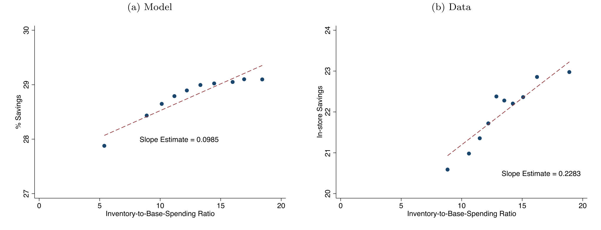
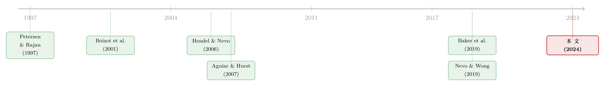

穷人没有不投资，他们把钱投进了储藏室
本文读的是 Baker, Johnson & Kueng (2024, Journal of Financial Economics)：美国家庭平均持有约 $725 的消费品库存——这是一类被传统财富统计完全忽略的非金融资产。通过策略性购物（囤货、趁打折、批量买）来打理这批库存，家庭能挣到极高的财务回报：低库存水平上边际回报超过 20%，而典型家庭的平均回报高达 50% 左右。对除了最富有人群之外的几乎所有家庭，把这块「家庭营运资本」放回资产负债表，都会显著改变他们真实的组合收益。
1 一个被问错了的问题
家庭金融里有一个被反复讲述的「事实」：相当一部分美国家庭几乎不持有金融资产，更不要说股票。于是文献热衷于问——他们为什么不参与市场？是风险厌恶太高，是固定的参与成本，还是行为偏差？（关于把「风险厌恶」与「麻烦成本」分开来量这件事，可参见《94% 的人其实都想买股票》。）
但这篇论文一上来就把问题掉了个个儿。它说：等一下，谁说这些家庭「不投资」了？
打开任何一个低收入家庭的厨房柜门，你会看到一堆罐头、一摞卷纸、几袋还没拆封的洗衣粉、冰箱里冻着的肉。这些不是消费，这些是存货。它们是花了真金白银买来、还没用掉、躺在家里替你「保值」的资产。论文给出的数字是：对一个处在年收入最低五分位（低于 $22,000）的家庭，这堆消费品库存的价值，比他全部金融资产加起来还要多。
也就是说，我们一直盯着这些家庭空空如也的证券账户，却对他们塞得满满当当的储藏室视而不见。
作者给这件事起了个精确的名字：家庭营运资本（household working capital），等于「现金 + 消费品库存」。这个类比是刻意的——企业的营运资本同样既包括流动资金，也包括那些至少部分不可交易的原材料与存货。家庭，原来也在像一家小公司那样，管理着自己的「现金—存货」两本账。
一旦把问题这样重新摆放，一个全新的、而且远比「参与之谜」更可量化的问题就浮出来了：
打理这批库存，到底能挣多少钱？
2 难点：你看不见库存
要回答「回报率」，先得知道「投了多少本金」。可家庭库存最麻烦的地方恰恰在于——它看不见。没有哪个数据库会告诉你，张三家此刻的柜子里躺着价值多少钱的货。传统的家庭金融数据（比如美联储的 SCF）里压根没有这一栏。这也是为什么 Jappelli et al. (2002) 那本被广泛引用的各国家庭投资组合专著里，没有任何一章把家庭库存算进去。
那怎么办？作者的第一个贡献，就是发明了一套从购买流量反推库存存量的方法。
他们手里的武器是 NielsenIQ 消费者面板（NCP）：六万多个具有全国代表性的美国家庭，用条码扫描枪逐笔记录自己买的每一样日用品，连买的时间戳、去的哪家店都有。问题是，NCP 只记录买入（flow），不记录你用掉了多少，也不知道你期初手里本来有多少。要从「买入流」算出「库存存量」，必须补三个假设：
- 假设一：家庭期初的存货，恰好「够用」——即在一年中库存至少触底一次（碰到零）。若家庭实际从不耗尽，这会低估库存。
- 假设二：一年内的库存消耗总量，等于一年的购买总量（年初年末库存持平）。
- 假设三：某一类商品的消耗（消费 + 折旧）速率在一年里是恒定的。
这第三个假设是把双刃剑，而处理它的方式，恰恰是这套方法最见功力的地方。
接着，一个自然的问题是：在多粗的商品分类层级上做这件事？如果你不做任何聚合、直接在单个 UPC（条码）上假设「消费恒定」，那就荒唐了——一个家庭这周买 Kellogg's Raisin Bran Original、下周换 Crunch，并不代表他同时囤了两种麦片，他只是换着花样吃。在 UPC 上假设恒定消费，会把库存高估到 $1,461。反过来，如果聚合得太狠，粗到 10 个「部门（department）」（比如整个「乳制品」），那家庭几乎永远不会让整个乳制品柜子见底，于是触零假设失效，库存被低估到 $431。
作者最终选定的折中是 118 个 NielsenIQ「商品组（product group）」（比如「奶酪」这个层级）。在这个层级上，NHANES 的实际消费数据（见下文）显示消费确实相当平稳，触零假设也大体成立。算出来的平均家庭库存，就是那个标志性的数字——$725。
3 库存是怎么从「流量」里被算出来的
这是论文里第一处需要一步步看的推导。它本质上是一道「面积」题，但直觉很漂亮，值得拆开。
我们关心的是一段时间 \([0,T]\) 内的平均库存：
$$\bar{I}_T = \frac{1}{T}\int_0^T I(t)\,dt$$
其中 \(I(t)\) 是时刻 \(t\) 那个看不见的库存水平。它由三块组成：期初库存 \(I(0)\)、\(0\) 到 \(t\) 之间所有购物补进来的货、以及以恒定速率 \(d\) 消耗掉的货：
$$I(t)=I(0)+\sum_{j=1}^{n_t} X_{t_j}-d\cdot t \tag{1}$$
这里 \(\{t_j\}_{j=1}^{n_t}\) 是 \(0\) 到 \(t\) 之间 \(n_t\) 次购物的时间戳，\(X_{t_j}\) 是第 \(j\) 次购物的总支出。
现在做积分。关键的观察是：期初库存 \(I(0)\) 在整段时间 \([0,T]\) 里都「在场」，而第 \(j\) 次买进来的那笔货 \(X_{t_j}\)，只从它被买进的 \(t_j\) 时刻起、到期末 \(T\) 为止「在场」。于是每一笔购物对累计库存的贡献，就是它的金额乘以它「在场」的时长 \((T-t_j)\)；而恒定消耗那一项积出来是一个三角形的面积 \(\tfrac{T^2}{2}d\)：
$$\int_0^T I(t)\,dt=I(0)\cdot T+\sum_{j=1}^{n_T}(T-t_j)X_{t_j}-\frac{T^2}{2}d \tag{2}$$
两边除以 \(T\)，就得到了整篇实证的基石——平均库存公式：
剩下的全是工程问题。把时间以「年」为单位，于是 \(T=1\)，时间戳 \(t_j\in[0,1]\)；恒定消耗速率 \(d\) 在年内被设为等于年支出总额（假设二）。给每一项加上家庭 \(h\)、商品组 \(g\)、年份 \(y\) 的下标，就得到了真正落地到数据上的那条公式：
$$\bar{I}_{y,h,g}=I(0)_{y,h,g}+\sum_{j=1}^{n_{y,h}}(1-t_j)\,X_{t_j,y,h,g}-\frac{1}{2}\sum_{j=1}^{n_{y,h}}X_{t_j,y,h,g} \tag{4}$$
而触零假设（假设一）在这里的作用，就是把那个无法直接观测的 \(I(0)\) 给「钉死」：作者把期初库存设成「恰好让全年库存不为负」的最小值。换句话说，只要在数据里把消耗折旧那条直线往下压、直到它在某一刻刚好碰到零，期初库存就被反解出来了。
这套估计的折旧速率 \(d\) 从哪来？来自 USDA 食品安全局的 FoodKeeper 数据——它记录了各类食品饮料的推荐储存时长。同时，他们用 CDC 的 NHANES 营养调查（受访者隔几天报告两天内实际吃了什么）去直接验证「消费在商品组层级上确实平稳」这个核心假设。这是这篇论文数据工作扎实的地方：每一个假设，都尽量找了一套独立数据去对账。
4 从「存货」到「回报」：购物模型
光知道库存值 $725 还不够，那只是「投了多少本金」。论文的第二个、也是更核心的贡献，是写下一个简洁的家庭购物模型（household shopping model），把「打理库存能挣多少」这个回报率算出来。
模型的精神可以这样讲。家庭要为既定的消费流（每天都得吃饭、用纸）付账，它优化的目标是——在满足一个家庭营运资本约束的前提下，最小化提供这股消费流的总成本，而它手里的决策变量，是购物的频率与时机（trip frequency and timing）。
这里有两种相互对立的省钱策略，模型把它们的张力讲得很透：
- 走「少而大」的路线：跑得少、每次买得多。好处是省下购物的固定成本（trip fixed cost，油钱、时间），还能靠批量采购拿到更低的单价。代价是，你得为更大的单次采购预先垫付更多流动资金，并且囤着的货会折旧、会过期。
- 走「多而勤」的路线：勤跑店，每次抓住当下的临时折扣。好处是更多机会薅到 deal，代价是累计的购物固定成本更高。
无论走哪条路，都要消耗资源：前者吃现金，后者吃库存。两者加总，就是家庭营运资本。模型于是把「投资于营运资本」翻译成了一件具体的事：多压一点现金和库存，能换来多低的购物成本和单价——这就是回报。
而这套设定里，有一个让全文逻辑闭合的精巧假设：各类商品的打折在典型购物频率下近似相互独立。作者用数据支持了这一点——附录显示，对给定零售商，某周的打折商品占比只在年均值的 80%–120% 间波动，且这种波动在不同零售商之间并不强相关。除了黑五、新年这种极少数日子，零售商全年打折的力度其实相当平稳。这个「独立打折」假设很重要：它意味着，把一个家庭购买的成百上千种 NielsenIQ 商品加总起来，任一时刻总有一个恒定比例的货在打折。于是家庭面对的不是一个充满随机冲击的世界，而是一个确定性的稳态（deterministic steady state）——在这个稳态里，家庭始终维持着相当水平的库存，购物间隔规整、批次相近。正是这种稳态，让「营运资本的回报率」成为一个可以干净计算的量。
那么这个回报率长什么样？两个数字是这篇论文的灵魂：
第一，边际回报很高，但递减极快。 在低库存水平上，多投一块钱营运资本的边际回报（marginal return）——净掉折旧与购物成本之后，且大致无风险——可以超过 20%。但随着库存上升，这个边际回报迅速跌落。这正解释了一个貌似矛盾的现象：为什么大多数家庭已经持有了相当可观的库存？因为前面那几块钱的回报实在太诱人，高到对少数家庭甚至能合理化刷信用卡去囤货；可一旦囤到一定程度，再投的边际回报就低了，于是他们停在那里。
第二，平均回报高得惊人，而且对所有人都高。 即便家庭已经囤到边际回报很低的水平，他们已经实现的平均回报（average return）依然很高——在库存对年支出比值的中位数处，约为 50%；即便在很高的营运资本水平上，平均回报也仍在 30% 以上。

Figure 10: shows estimates of 𝑏 from (32) and a binned scatterplot for
把这块回报放回家庭的资产负债表，会发生一件反直觉的事。因为低收入家庭的财富里，库存占的份额更大，所以把营运资本算进去，反而足以抵消、甚至盖过富人在金融资产上挣到的更高回报。结论是：算上家庭营运资本之后，家庭组合的总回报，是随着收入和金融财富的上升而下降的。穷人不是回报洼地——只要你愿意把他们储藏室里那笔投资也记上账。
这里要小心一个容易误读的点：高回报不等于好事或免费的午餐。这些回报是家庭为了平滑消费、应对流动性约束，用时间、精力和折旧损耗换来的。它更像是在告诉我们：对一个被挡在风险金融市场门外的低财富家庭来说，囤货式的库存管理，是他在低流动性水平上唯一可得的、回报相当不错的「投资替代品」。
5 文献脉络
这篇论文坐在两条河流的交汇处。
一条河来自囤货与打折购物（stockpiling / deal shopping）的产业组织文献。早期工作把镜头对准单个商品在随机框架下的囤货行为：Boizot et al. (2001)、Hendel & Nevo (2013) 研究消费者如何对临时低价做出反应；Hendel & Nevo (2006a) 用一个动态离散选择模型，揭示临时折扣如何通过库存渠道，制造出扫描数据里那些大得反常的价格弹性。再往后，Baker et al. (2019, 2021) 用预先公告的地方销售税上调做准自然实验，干净地识别出消费者会在税涨之前抢着囤货。但这一整支文献，关注的几乎都是省了多少钱（in-store savings，占商品价格的百分比，如 Griffith et al. 2009、Nevo & Wong 2019），却没有问：为了实现这些省钱，家庭得额外压住多少营运资本，而这笔营运资本的财务回报又是多少？

另一条河来自家庭金融（household finance）本身。企业的存货早就被认真当作营运资本的一部分研究透了（Petersen & Rajan 1997；Fisman & Love 2003；Yang & Birge 2018；Rampini 2019），可消费品库存与家庭营运资本，却被家庭金融文献几乎整体性地忽略了——Jappelli et al. (2002)、Bertaut & Starr (2000) 这些经典的家庭投资组合研究里都没有它的位置。一个少有的例外是 Samphantharak & Townsend (2010)，但那研究的是发展中国家里以农业为生、本就把大量财富压在存货上的家庭。
这篇论文的位置，就是把这两条河接起来：它借用产业组织文献里「囤货省钱」的机制，但把分析推进了关键的一步——不止算省了多少，而是把折旧、购物固定成本、以及为打理库存所必须持有的那部分流动储蓄全都算进去，第一次系统地计算了家庭营运资本的总净回报，并把这块回报放回家庭金融的资产负债表里。它也因此成为最早系统研究家庭库存在家庭金融中角色的论文之一。这也呼应了 Orhun & Palazzolo (2019) 的观察：低收入家庭对打折反应更弱，恰恰是因为缺少可供「跨期替代」的流动性储备——而本文，正是给这块「储备」标出了它的价格。
6 模型论文专用：回报的几何直觉
值得再强调一遍模型给「回报」赋予的几何含义，因为它和第 3 节的库存推导共用同一套语言。在确定性稳态里，家庭的平均库存正比于「单次采购量」乘以「在场时长」——也就是公式 $(3)$ 里那个加权求和项。一个走「少而大」路线的家庭，单次采购 \(X_{t_j}\) 大、购物次数 \(n_T\) 少，于是平均库存高、压住的营运资本多；一个走「多而勤」路线的家庭则相反。模型要做的，就是在这两端之间找到让总成本最低的那个购物频率，而最优点处，多压一单位营运资本带来的成本节省，就是边际回报。库存对年支出比值越低（家庭越穷、越缺流动性），这个最优点就越靠近那条陡峭曲线的左端——边际回报因此越高。这正是「边际回报随库存上升而递减」与「穷人组合回报反而更高」这两个结论在数学上的同一个根。
评论与延伸（Q&A + 研究方向）
(a) 几个可能的疑问
Q：50% 的「回报率」是不是被这套测量方法人为夸大了？
这是最该追问的一点。回报的分母是「库存这块本金」，而库存又是用三个假设反推出来的；若这些假设系统性地低估了库存（比如家庭实际上从不让某商品组触零，导致 \(I(0)\) 被估得过低），分母偏小，回报率就会被推高。作者对此是有意识的：他们反复强调
$725是一个下界（因为只覆盖 NielsenIQ 的日用品，不含囤积的衣服、电子产品等），并用 NHANES 实际消费、不同聚合层级的对照、以及按数量而非金额的另一套估值方法来交叉检验。但「回报对本金测量误差敏感」这一点，读者心里要始终绷着。
Q：这跟「预防性储蓄（precautionary savings）」是一回事吗？
不是，这恰恰是本文想区分的。预防性动机解释的是家庭为应对未来不确定性而持有的缓冲存量。本文说的是另一层：即便撇开缓冲动机，最优的库存管理本身就要求家庭持有相当的营运资本，因为打理库存能挣到高回报。换句话说，它为「家庭为什么持有这么多流动资产」提供了一个缓冲存量之外的、纯财务回报驱动的理由。
Q：这些回报「无风险」的说法可信吗？
模型给出的边际回报被描述为「近似无风险」，这依赖于那个关键假设——打折在商品间、在典型购物频率下近似独立，从而加总后家庭面对的是一个确定性稳态而非随机世界。作者用零售商打折占比全年平稳（80%–120% 区间波动）来支撑它。但这是一个近似：对于打折确实高度同步的极端时点（黑五、年终大促），独立性会被破坏，那时囤货反而更像一个择时下注。
Q：为什么要把「现金」和「库存」捆成一个『营运资本』？
因为两种省钱策略恰好分别吃这两样东西：走「少而大」要垫付现金，走「多而勤」要压住库存。把它们捆在一起，才能完整地刻画家庭为「降低消费供给成本」这件事所投入的总资源——这正是企业营运资本概念的精髓。这一捆绑也让本文与「现金并非完全同质」一类研究产生了对话（可参见《钱的温度：当「一块钱永远等于一块钱」不再成立》）。
Q：这是不是只对食品杂货成立，换个品类就垮了？
很大程度上是的，而作者也老实承认。测量只覆盖 NielsenIQ 的日用快消品，不含服装、电子、家电这些大件囤积。这意味着
$725是一个下界，真实的家庭库存（以及它带来的回报与组合影响）只会比论文报告的更可观，而非更小。
Q：富人组合回报反而更低，这个反转是不是只是核算口径的产物？
部分是定义、部分是实质。说它是定义：一旦你接受「库存是资产」并把高回报的营运资本计入组合，份额更偏向库存的穷人组合回报自然被抬高。说它是实质：它提醒我们，传统只看金融资产的组合回报度量，对低财富家庭是系统性失真的——我们一直以为他们回报低、不会理财，可能只是因为我们没把他们真正在投资的那类资产算进来。
(b) 几个可能的研究问题与提案
1. 通胀冲击下的家庭库存——一种「实物资产」对冲？
【经济故事】库存是实物，价格上涨时它天然保值。2021–2023 的高通胀提供了一次绝佳的时间序列变异：当家庭预期涨价，是否会理性地提前囤货、把库存当作对冲通胀的低门槛工具？这与「股票是否真资产」之争（参见《通胀来了，股票是「真资产」还是「纸面财富」？》）形成有趣对照——也许对低财富家庭，真正的抗通胀资产不是股票，而是储藏室。 【可行性】中。NielsenIQ 面板延伸到通胀期 + 区域通胀预期数据可做；识别难点在于把「囤货」与「抢购恐慌」「供给短缺」分开，需要借助预期数据或局部价格冲击做工具。
2. 把「营运资本」搬进信用市场：囤货融资与高息借贷的合理性。
【经济故事】论文已指出，对少数家庭，超过 20% 的边际回报甚至能合理化刷信用卡囤货。那么反过来：能不能用家庭层面的库存边际回报，去解释一部分原本被归为「非理性」的高息消费信贷？如果一个家庭的囤货边际回报真有 20%+，那么以 18% 的信用卡利率借钱囤货就是理性的。 【可行性】中偏低。需要把消费信贷数据（信用卡账单/账户层级）与扫描购物数据匹配，这类链接数据稀缺；识别上还要排除单纯的流动性紧张。doable 但门槛高。
3. 外资/跨境视角：库存管理在供应链中断下的家庭韧性。
【经济故事】疫情期间的供应链中断与「囤纸潮」是天然实验。哪些家庭因为本就维持着高营运资本而更从容地穿过了短缺？这把「家庭营运资本」与宏观供给冲击的微观传导连在一起。 【可行性】高。2020 数据 + 区域性短缺变异即可，事件研究框架清晰，唯一要小心的是把「囤积引发的短缺」与「短缺引发的囤积」内生性理清。
4. 库存回报与股市参与之谜的再检验。
【经济故事】本文最大的含义是：低财富家庭「不参与股市」也许根本不是谜——他们只是把有限的资源投进了边际回报更高的库存。一个直接可检验的命题是：当一个家庭的库存边际回报跌破股市预期回报时，它是否更可能开始参与风险金融市场？ 【可行性】中。需要把估出的家庭库存边际回报与其后续的金融账户开立/股票参与挂钩，SCF 面板或行政数据可做；难点是库存回报与参与决策可能同受财富这一第三变量驱动，需要一个外生冲击（如某商品组的折旧/价格结构变化）作识别。
我的判断
这篇论文最漂亮的地方，是它重新定义了「本金」。整个家庭金融文献都在金融资产那一栏里找答案，而它把镜头转向了一个所有人都拥有、却从未被记账的资产类别，并用一套可复制、处处与独立数据对账的方法把它量了出来。$725 这个数字本身也许不会让人惊掉下巴，但「对最低收入五分位，它超过全部金融资产」与「平均回报 50%」这两个对照，足以重写我们对「穷人不会理财」的整套直觉。从公司金融借来「营运资本」这个旧概念、装到家庭身上，这种概念性的搬运是高质量实证论文的标志。
我的担忧集中在识别与外推两处。识别上，回报率的分母——库存本金——终究是三个假设反推出来的，整套结论对这套测量的稳健性高度敏感；尽管作者做了大量对账，但「触零假设」在何种家庭、何种品类上会系统性失效，仍是读者需要自己掂量的。外推上，覆盖范围被限制在快消品，作者诚实地把数字称为下界，可这也意味着我们其实不知道把大件耐用品囤积算进来后，整幅图景会被改写到什么程度——它可能让结论更强，也可能引入与折旧、二手转售完全不同的回报结构。
后续我最想看到的，是把这套「家庭营运资本」框架接到信用市场与流动性上：如果囤货的边际回报真有 20% 以上，那么家庭的高息借贷、现金持有、乃至「不参与股市」的选择，是否都能在这个统一的回报标尺下被重新解释？那将是从「测量一个被忽略的资产」迈向「用它解释家庭整张资产负债表」的关键一跃。
参考文献
- Baker, S. R., Johnson, S., Kueng, L. (2024). Financial returns to household inventory management. Journal of Financial Economics 151, 103758.
- Aguiar, M., Hurst, E. (2007). Life-cycle prices and production. American Economic Review 97(5), 1533–1559.
- Aguiar, M., Hurst, E. (2013). Deconstructing life cycle expenditure. Journal of Political Economy 121(3), 437–492.
- Bertaut, C., Starr, M. (2000). Household portfolios in the United States. FEDS Working Paper.
- Boizot, C., Robin, J.-M., Visser, M. (2001). The demand for food products: an analysis of interpurchase times and purchased quantities. Economic Journal 111, 391–419.
- Broda, C., Weinstein, D. (2010). Product creation and destruction: evidence and price implications. American Economic Review 100(3), 691–723.
- Einav, L., Leibtag, E., Nevo, A. (2010). Recording discrepancies in Nielsen Homescan data. Quantitative Marketing and Economics 8, 207–239.
- Fisman, R., Love, I. (2003). Trade credit, financial intermediary development, and industry growth. Journal of Finance 58(1), 353–374.
- Griffith, R., Leibtag, E., Leicester, A., Nevo, A. (2009). Consumer shopping behavior: how much do consumers save? Journal of Economic Perspectives 23(2), 99–120.
- Guiso, L., Sodini, P. (2013). Household finance: an emerging field. In Handbook of the Economics of Finance, vol. 2. Elsevier.
- Hendel, I., Nevo, A. (2006a). Measuring the implications of sales and consumer inventory behavior. Econometrica 74(6), 1637–1673.
- Hendel, I., Nevo, A. (2013). Intertemporal price discrimination in storable goods markets. American Economic Review 103(7), 2722–2751.
- Jappelli, T., et al. (2002). Household Portfolios. MIT Press.
- Nevo, A., Wong, A. (2019). The elasticity of substitution between time and market goods: evidence from the Great Recession. International Economic Review 60(1), 25–51.
- Orhun, A. Y., Palazzolo, M. (2019). Frugality is hard to afford. Journal of Marketing Research 56(1), 1–17.
- Petersen, M. A., Rajan, R. G. (1997). Trade credit: theories and evidence. Review of Financial Studies 10(3), 661–691.
- Rampini, A. (2019). Financing durable assets. American Economic Review 109(2), 664–701.
- Samphantharak, K., Townsend, R. (2010). Households as Corporate Firms. Cambridge University Press.